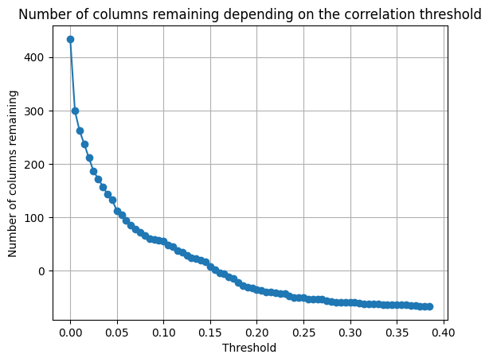
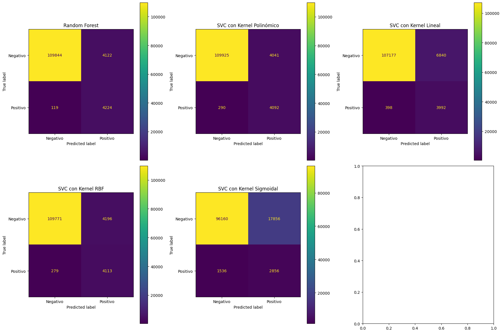

Modelo Fraud#
import pandas as pd
import numpy as np
import matplotlib.pyplot as plt
from sklearn.preprocessing import OneHotEncoder
import os
import pickle
from sklearn.model_selection import train_test_split
from sklearn.ensemble import RandomForestClassifier
from sklearn.experimental import enable_iterative_imputer
from sklearn.impute import IterativeImputer
from sklearn.pipeline import Pipeline
from sklearn.model_selection import train_test_split
from time import time
from sklearn.metrics import accuracy_score, precision_score, recall_score, f1_score, roc_auc_score, mean_absolute_percentage_error, mean_squared_error, r2_score
from imblearn.over_sampling import ADASYN
from sklearn.ensemble import RandomForestClassifier
from sklearn.preprocessing import StandardScaler, MinMaxScaler
from sklearn.svm import SVC
from sklearn.model_selection import GridSearchCV
from sklearnex import patch_sklearn
patch_sklearn()
import warnings
warnings.filterwarnings('ignore')
---------------------------------------------------------------------------
ModuleNotFoundError Traceback (most recent call last)
Cell In[1], line 3
1 import pandas as pd
2 import numpy as np
----> 3 import matplotlib.pyplot as plt
4 from sklearn.preprocessing import OneHotEncoder
5 import os
ModuleNotFoundError: No module named 'matplotlib'
df_fraud = pd.read_csv('data_fraud.csv')
df_fraud.head()
| TransactionID | isFraud | TransactionDT | TransactionAmt | ProductCD | card1 | card2 | card3 | card4 | card5 | ... | id_31 | id_32 | id_33 | id_34 | id_35 | id_36 | id_37 | id_38 | DeviceType | DeviceInfo | |
|---|---|---|---|---|---|---|---|---|---|---|---|---|---|---|---|---|---|---|---|---|---|
| 0 | 2987000 | 0 | 86400 | 68.5 | W | 13926 | NaN | 150.0 | discover | 142.0 | ... | NaN | NaN | NaN | NaN | NaN | NaN | NaN | NaN | NaN | NaN |
| 1 | 2987001 | 0 | 86401 | 29.0 | W | 2755 | 404.0 | 150.0 | mastercard | 102.0 | ... | NaN | NaN | NaN | NaN | NaN | NaN | NaN | NaN | NaN | NaN |
| 2 | 2987002 | 0 | 86469 | 59.0 | W | 4663 | 490.0 | 150.0 | visa | 166.0 | ... | NaN | NaN | NaN | NaN | NaN | NaN | NaN | NaN | NaN | NaN |
| 3 | 2987003 | 0 | 86499 | 50.0 | W | 18132 | 567.0 | 150.0 | mastercard | 117.0 | ... | NaN | NaN | NaN | NaN | NaN | NaN | NaN | NaN | NaN | NaN |
| 4 | 2987004 | 0 | 86506 | 50.0 | H | 4497 | 514.0 | 150.0 | mastercard | 102.0 | ... | samsung browser 6.2 | 32.0 | 2220x1080 | match_status:2 | T | F | T | T | mobile | SAMSUNG SM-G892A Build/NRD90M |
5 rows × 434 columns
X, y = df_fraud.drop('isFraud', axis=1), df_fraud['isFraud']
X_train, X_test, y_train, y_test = train_test_split(X, y, test_size=0.2, random_state=42)
df_train = pd.concat([X_train, y_train], axis=1)
df_test = pd.concat([X_test, y_test], axis=1)
import pandas as pd
from sklearn.preprocessing import OneHotEncoder
from sklearn.decomposition import TruncatedSVD
def encode_data_with_svd(df_train, df_test, n_components=100, batch_size=10000):
object_df_train = df_train.select_dtypes(include=['object'])
object_df_test = df_test.select_dtypes(include=['object'])
encoder = OneHotEncoder(drop='first', handle_unknown='ignore')
encoder.fit(object_df_train)
categories = encoder.categories_
encoded_columns = [
f"{col}_{category}"
for i, col in enumerate(object_df_train.columns)
for category in categories[i][1:]
]
def transform_and_svd_in_batches(df, encoder, n_components, batch_size):
n = len(df)
svd = TruncatedSVD(n_components=n_components)
for i in range(0, n, batch_size):
batch = df.iloc[i:i+batch_size]
encoded_batch = encoder.transform(batch)
svd.fit(encoded_batch)
yield pd.DataFrame(svd.transform(encoded_batch), columns=[f'SVD_{i}' for i in range(n_components)])
svd_train_batches = list(transform_and_svd_in_batches(object_df_train, encoder, n_components, batch_size))
svd_test_batches = list(transform_and_svd_in_batches(object_df_test, encoder, n_components, batch_size))
svd_df_train = pd.concat(svd_train_batches, axis=0).reset_index(drop=True)
svd_df_test = pd.concat(svd_test_batches, axis=0).reset_index(drop=True)
df_train_non_categorical = df_train.drop(columns=object_df_train.columns).reset_index(drop=True)
df_test_non_categorical = df_test.drop(columns=object_df_train.columns).reset_index(drop=True)
df_train_encoded = pd.concat([df_train_non_categorical, svd_df_train], axis=1)
df_test_encoded = pd.concat([df_test_non_categorical, svd_df_test], axis=1)
return df_train_encoded, df_test_encoded
df_train_encoded, df_test_encoded = encode_data_with_svd(df_train, df_test, n_components=100, batch_size=10000)
print(df_train_encoded.shape)
print(df_test_encoded.shape)
(472432, 503)
(118108, 503)
correlation = df_train_encoded.drop('isFraud', axis=1).corrwith(df_train_encoded['isFraud']).apply(abs).sort_values(ascending=False)
correlation.head()
V257 0.387404
V246 0.371294
V244 0.368243
V242 0.364785
V201 0.332932
dtype: float64
import numpy as np
def plot_correlation_threshold(correlation, df_train):
thresholds = np.arange(0, correlation[0], 0.005)
nb_col_remaining = []
for threshold in thresholds:
columns_to_drop = correlation[correlation < threshold].index
nb_col_remaining.append(df_train.shape[1] - len(columns_to_drop))
plt.plot(thresholds, nb_col_remaining, marker='o')
plt.title('Number of columns remaining depending on the correlation threshold')
plt.xlabel('Threshold')
plt.ylabel('Number of columns remaining')
plt.grid(True)
plt.show()
plot_correlation_threshold(correlation, df_train)

def filter_data_with_correlation(df_train, df_test, correlation_threshold=0.05):
columns_to_drop = correlation[correlation < correlation_threshold].index
columns_to_drop = [col for col in columns_to_drop if col in df_train.columns] # Verificación de existencia de columnas
df_train_filtered = df_train.drop(columns=columns_to_drop, errors='ignore') # Usamos errors='ignore' para evitar errores si la columna ya ha sido eliminada
df_test_filtered = df_test.drop(columns=columns_to_drop, errors='ignore') # Usamos errors='ignore' para evitar errores si la columna ya ha sido eliminada
return df_train_filtered, df_test_filtered
# Filtra los datos basados en la correlación y obtén los DataFrames filtrados
df_train_filtered, df_test_filtered = filter_data_with_correlation(df_train, df_test)
print(df_train_filtered.shape)
print(df_test_filtered.shape)
(472432, 206)
(118108, 206)
def evaluate_model(model, X_test, y_test):
y_pred = model.predict(X_test)
accuracy = round(accuracy_score(y_test, y_pred), 3)
precision = round(precision_score(y_test, y_pred), 3)
recall = round(recall_score(y_test, y_pred), 3)
f1 = round(f1_score(y_test, y_pred), 3)
roc_auc = round(roc_auc_score(y_test, y_pred), 3)
return {'accuracy': accuracy, 'precision': precision, 'recall': recall, 'f1': f1, 'roc_auc': roc_auc}
def perform_imputation_and_return_data(df_train_filtered, selected_vars):
results_imputation = pd.DataFrame(columns=['features', 'max_iters', 'CPU time', "Accuracy", "Precision", "Recall", "f1-score", "AUC"])
nb_res = 0
features = [5, 10, 20, 50]
iters = [5, 10, 20, 50]
df_train_filtered = df_train_filtered[selected_vars]
X_train, y_train = df_train_filtered.drop('isFraud', axis=1), df_train_filtered['isFraud']
X_train_imputation, X_test_imputation, y_train_imputation, y_test_imputation = train_test_split(X_train, y_train, test_size=0.2, random_state=42)
imputations = {}
for max_iter in iters:
for n_nearest_features in features:
print(f"Training with n_nearest_features: {n_nearest_features}, max_iter: {max_iter}")
imputer = IterativeImputer(n_nearest_features=n_nearest_features, max_iter=max_iter, random_state=42)
pipeline = Pipeline(steps=[('i', imputer), ('m', RandomForestClassifier(n_estimators=20, max_depth=10, random_state=42))])
start_time = time()
pipeline.fit(X_train_imputation, y_train_imputation)
end_time = time()
eval = evaluate_model(pipeline, X_test_imputation, y_test_imputation)
results_imputation.loc[nb_res] = [n_nearest_features, max_iter, round(end_time - start_time, 1),
eval['Accuracy'], eval['Precision'], eval['Recall'],
eval['F1 Score'], eval['AUC ROC']]
nb_res += 1
print()
imputations[f'n_nearest_features_{n_nearest_features}_max_iter_{max_iter}'] = imputer.transform(X_train)
return results_imputation, imputations
selected_vars = ['D2', 'D4', 'D5', 'D8', 'D10', 'D15', 'V18', 'V30', 'V34', 'V36', 'V56', 'V62',
'V74', 'V75', 'V87', 'V142', 'V145', 'V147', 'V162', 'V165', 'V169', 'V176', 'V184',
'V220', 'V222', 'V232', 'V239', 'V251', 'V261', 'V281', 'V282', 'V283', 'V303',
'id_01', 'id_04', 'id_07', 'isFraud']
results_imputation, imputations = perform_imputation_and_return_data(df_train_filtered, selected_vars)
Training with n_nearest_features: 5, max_iter: 5
AUC ROC: 0.8351969847529948
Training with n_nearest_features: 10, max_iter: 5
AUC ROC: 0.8373867001909804
Training with n_nearest_features: 20, max_iter: 5
AUC ROC: 0.8328243226839825
Training with n_nearest_features: 50, max_iter: 5
AUC ROC: 0.8379689988488553
Training with n_nearest_features: 5, max_iter: 10
AUC ROC: 0.8351572606593756
Training with n_nearest_features: 10, max_iter: 10
AUC ROC: 0.834837059164071
Training with n_nearest_features: 20, max_iter: 10
AUC ROC: 0.8349866893873729
Training with n_nearest_features: 50, max_iter: 10
AUC ROC: 0.8353273579470393
Training with n_nearest_features: 5, max_iter: 20
AUC ROC: 0.8411044780480899
Training with n_nearest_features: 10, max_iter: 20
AUC ROC: 0.838619339333645
Training with n_nearest_features: 20, max_iter: 20
AUC ROC: 0.8346344187264101
Training with n_nearest_features: 50, max_iter: 20
AUC ROC: 0.8358250981223614
Training with n_nearest_features: 5, max_iter: 50
AUC ROC: 0.8374157151503857
Training with n_nearest_features: 10, max_iter: 50
AUC ROC: 0.8364920555598166
Training with n_nearest_features: 20, max_iter: 50
AUC ROC: 0.8341032214039861
Training with n_nearest_features: 50, max_iter: 50
AUC ROC: 0.8366668603369912
print(results_imputation.head(16))
features max_iters CPU time Accuracy Precision Recall f1-score \
0 5.0 5.0 31.7 0.970324 0.889036 0.198350 0.324337
1 10.0 5.0 40.1 0.970292 0.867168 0.203949 0.330231
2 20.0 5.0 64.3 0.970366 0.886571 0.200413 0.326923
3 50.0 5.0 120.6 0.969827 0.869210 0.188034 0.309183
4 5.0 10.0 43.5 0.970483 0.896325 0.201297 0.328761
5 10.0 10.0 60.0 0.970102 0.880697 0.193634 0.317468
6 20.0 10.0 106.3 0.970123 0.876984 0.195402 0.319595
7 50.0 10.0 215.2 0.969625 0.879536 0.178603 0.296913
8 5.0 20.0 65.9 0.970303 0.884666 0.198939 0.324832
9 10.0 20.0 99.3 0.970419 0.878481 0.204539 0.331819
10 20.0 20.0 190.3 0.970070 0.881242 0.192455 0.315917
11 50.0 20.0 404.7 0.969774 0.877637 0.183908 0.304094
12 5.0 50.0 131.3 0.970356 0.891534 0.198644 0.324898
13 10.0 50.0 216.4 0.970112 0.877822 0.194813 0.318862
14 20.0 50.0 441.5 0.970165 0.875654 0.197171 0.321867
15 50.0 50.0 443.6 0.969551 0.862360 0.180961 0.299147
AUC
0 0.835197
1 0.837387
2 0.832824
3 0.837969
4 0.835157
5 0.834837
6 0.834987
7 0.835327
8 0.841104
9 0.838619
10 0.834634
11 0.835825
12 0.837416
13 0.836492
14 0.834103
15 0.836667
selected_vars = ['D2', 'D4', 'D5', 'D8', 'D10', 'D15', 'V18', 'V30', 'V34', 'V36', 'V56', 'V62',
'V74', 'V75', 'V87', 'V142', 'V145', 'V147', 'V162', 'V165', 'V169', 'V176', 'V184',
'V220', 'V222', 'V232', 'V239', 'V251', 'V261', 'V281', 'V282', 'V283', 'V303',
'id_01', 'id_04', 'id_07', 'isFraud']
df_train_final = df_train_filtered[selected_vars]
df_test_final = df_test_filtered[selected_vars]
data_train = df_train_final.drop(df_train_final[df_train_final['isFraud'] == 0].sample(n=df_train_final[df_train_final['isFraud'] == 0].shape[0]-16421).index)
print(data_train.shape)
(32842, 37)
X_train, y_train = data_train.drop('isFraud', axis=1), data_train['isFraud']
X_test, y_test = df_test_final.drop('isFraud', axis=1), df_test_final['isFraud']
ada = ADASYN(random_state=42)
X_train_res, y_train_res = ada.fit_resample(X_train, y_train)
print("Resampling completado con éxito.")
Resampling completado con éxito.
def calculate_percentage(count, total):
return round((count / total) * 100, 1)
total_train = len(y_train)
total_train_res = len(y_train_res)
total_test = len(y_test)
print("Conjunto de entrenamiento original")
print(f"Clase 0: {y_train.tolist().count(0)} ({calculate_percentage(y_train.tolist().count(0), total_train)}%)")
print(f"Clase 1: {y_train.tolist().count(1)} ({calculate_percentage(y_train.tolist().count(1), total_train)}%)")
print()
print("Conjunto de entrenamiento resampleado")
print(f"Clase 0: {y_train_res.tolist().count(0)} ({calculate_percentage(y_train_res.tolist().count(0), total_train_res)}%)")
print(f"Clase 1: {y_train_res.tolist().count(1)} ({calculate_percentage(y_train_res.tolist().count(1), total_train_res)}%)")
print()
print("Conjunto de prueba")
print(f"Clase 0: {y_test.tolist().count(0)} ({calculate_percentage(y_test.tolist().count(0), total_test)}%)")
print(f"Clase 1: {y_test.tolist().count(1)} ({calculate_percentage(y_test.tolist().count(1), total_test)}%)")
Conjunto de entrenamiento original
Clase 0: 16421 (50.0%)
Clase 1: 16421 (50.0%)
Conjunto de entrenamiento resampleado
Clase 0: 16421 (50.0%)
Clase 1: 16421 (50.0%)
Conjunto de prueba
Clase 0: 113866 (96.4%)
Clase 1: 4242 (3.6%)
nb_col = X_train.shape[1]
dict_models = [
{
'name_clf': 'Random Forest',
'model': RandomForestClassifier(random_state=42),
'scalers': {
'scaler': [None],
},
'grid': {
'model__max_depth': [None, 10, 20, 30, 40, 50],
'model__n_estimators': [10, 50, 100, 200],
},
},
{
'name_clf': 'SVC (poly)',
'model': SVC(random_state=42, kernel='poly', probability=True),
'scalers': {
'scaler': [None, MinMaxScaler(), StandardScaler()],
},
'grid': {
'model__C': [0.001, 0.01, 0.1, 1, 10, 100],
}
},
{
'name_clf': 'SVC (linear)',
'model': SVC(random_state=42, kernel='linear', probability=True),
'scalers': {
'scaler': [MinMaxScaler(), StandardScaler()],
},
'grid': {
'model__C': [0.001, 0.01, 0.1, 1, 10, 100],
}
},
{
'name_clf': 'SVC (rbf)',
'model': SVC(random_state=42, kernel='rbf'),
'scalers': {
'scaler': [None, MinMaxScaler(), StandardScaler()],
},
'grid': {
'model__C': [0.001, 0.01, 0.1, 1, 10, 100],
}
},
{
'name_clf': 'SVC (sigmoid)',
'model': SVC(random_state=42, kernel='sigmoid'),
'scalers': {
'scaler': [None, MinMaxScaler(), StandardScaler()],
},
'grid': {
'model__C': [0.001, 0.01, 0.1, 1, 10, 100],
}
},
]
results = pd.DataFrame(columns=["Model", "CPU time", "Accuracy", "Precision", "Recall", "f1-score", "AUC"])
models = {}
nb_res = 0
for i, dict_clf in enumerate(dict_models):
model_name = dict_clf['name_clf']
model_path = f"../models/{model_name}.pkl"
if not os.path.exists(model_path):
print(f'Training {model_name}...')
model = dict_clf['model']
steps = [
('scaler', None),
('model', model),
]
pipeline = Pipeline(steps)
param_grid = {
**dict_clf['scalers'],
**dict_clf['grid']
}
clf = GridSearchCV(pipeline, param_grid=param_grid, cv=5, n_jobs=-1, verbose=1, scoring='roc_auc')
start_time = time()
clf.fit(X_train_res, y_train_res)
end_time = time()
duration = round(end_time - start_time, 1)
print(f"CPU Time: {duration}s")
os.makedirs(os.path.dirname(model_path), exist_ok=True)
with open(model_path, 'wb') as f:
pickle.dump(clf, f)
else:
with open(model_path, 'rb') as f:
clf = pickle.load(f)
start_time = time()
clf.predict(X_test[:10])
end_time = time()
duration = round(end_time - start_time, 1)
eval = evaluate_model(clf, X_test, y_test)
models[model_name] = clf
results.loc[nb_res] = [model_name, duration, eval['Accuracy'], eval['Precision'], eval['Recall'], eval['F1 Score'], eval['AUC ROC']]
nb_res += 1
print()
print(results)
Model CPU time Accuracy Precision Recall f1-score AUC
0 Random Forest 1314.7 0.962 0.495 0.980 0.655 0.947
1 SVC (rbf) 2958.8 0.960 0.480 0.940 0.635 0.928
2 SVC (poly) 15212.0 0.961 0.490 0.939 0.645 0.927
3 SVC (linear) 23458.3 0.937 0.355 0.914 0.515 0.902
4 SVC (sigmoid) 955.1 0.830 0.130 0.650 0.220 0.720
Podemos observar en los resultados que el modelo para la clasificación de detección de fraude en tarjetas, sería Random Forest, en ambos tiempo de computo y el resultado del AUC que es la metrica que vamos a analizar para ver el rendimiento de los modelos, con un AUC de 0.947
model_names = results["Model"]
metrics = ["CPU time", "Accuracy", "Precision", "Recall", "f1-score", "AUC"]
fig, axes = plt.subplots(len(metrics), 1, figsize=(10, len(metrics) * 5))
for i, metric in enumerate(metrics):
ax = axes[i]
ax.bar(model_names, results[metric])
ax.set_title(metric)
ax.set_ylabel(metric)
ax.set_xticklabels(model_names, rotation=45, ha="right")
ax.grid(axis="y")
plt.tight_layout()
plt.show()
Con Bayes Optimization#
import os
import pandas as pd
import pickle
from time import time
from sklearn.pipeline import Pipeline
from skopt import BayesSearchCV
results = pd.DataFrame(columns=["Model", "CPU time", "Accuracy", "Precision", "Recall", "f1-score", "AUC"])
models = {}
nb_res = 0
for i, dict_clf in enumerate(dict_models):
model_name = dict_clf['name_clf']
model_path = f"../models/{model_name}.pkl"
if not os.path.exists(model_path):
print(f'Training {model_name}...')
model = dict_clf['model']
steps = [
('scaler', None),
('model', model),
]
pipeline = Pipeline(steps)
param_grid = {
**dict_clf['scalers'],
**dict_clf['grid']
}
clf = BayesSearchCV(pipeline, search_spaces=param_grid, cv=5, n_iter=10, n_jobs=-1, verbose=1, scoring='roc_auc', random_state=42)
start_time = time()
clf.fit(X_train_res, y_train_res)
end_time = time()
duration = round(end_time - start_time, 1)
print(f"CPU Time: {duration}s")
os.makedirs(os.path.dirname(model_path), exist_ok=True)
with open(model_path, 'wb') as f:
pickle.dump(clf, f)
else:
with open(model_path, 'rb') as f:
clf = pickle.load(f)
start_time = time()
clf.predict(X_test[:10])
end_time = time()
duration = round(end_time - start_time, 1)
eval = evaluate_model(clf, X_test, y_test)
models[model_name] = clf
results.loc[nb_res] = [model_name, duration, eval['accuracy'], eval['precision'], eval['recall'], eval['f1'], eval['roc_auc']]
nb_res += 1
print(results)
Model CPU time Accuracy Precision Recall f1-score AUC
0 Random Forest 61.5 0.963 0.490 0.991 0.656 0.974
1 SVC (poly) 7241.5 0.961 0.480 0.955 0.638 0.956
2 SVC (rbf) 492.4 0.963 0.492 0.950 0.649 0.955
3 SVC (sigmoid) 310.0 0.735 0.093 0.725 0.164 0.725
model_names = results["Model"]
metrics = ["CPU time", "Accuracy", "Precision", "Recall", "f1-score", "AUC"]
fig, axes = plt.subplots(len(metrics), 1, figsize=(10, len(metrics) * 5))
for i, metric in enumerate(metrics):
ax = axes[i]
ax.bar(model_names, results[metric])
ax.set_title(metric)
ax.set_ylabel(metric)
ax.set_xticklabels(model_names, rotation=45, ha="right")
ax.grid(axis="y")
plt.tight_layout()
plt.show()
